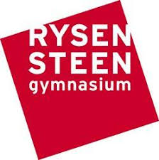

Så du skal til Egypten?

Før man kan lærer om Egypten som GCP destination skal man først lærer noget om hvad Global Citezen programmet går ud på. Det kan man læse en masse om inden på Rysensteens hjemmeside
Tryk på logoet for at læse mere:
Fakta om Egypten
- Egypten har 86 millioner indbyggere
- Egypten er overvejende sunnimuslimsk, men omkring 7-15% af landet er kristne. Det er den største kristne befolkningsgruppe i mellemøsten
- De snakker arabisk i Egypten, men mange fra overklassen snakker engelsk, da de tidligere var koliniseret af England
- Egypten er hjem til Nilen, som er verdens længste flod
- Egypten er en af de ældste civilisationer i verden
Egypten som GCP destination
I løbet af dit skoleår vil du have GCP undervisning om Egypten. Det sker især i historie men også i andre fag Måske har du allerede haft sådan undervisning. I april i 2.G vil du så få egyptere på Homestay. Det kan være en hård omgang , men ikke noget man ikke kan klare. Endelig i 3.G går turen til Cairo. Derefter er der et nil cruise, i nogle dage og til sidst slutter man turen af tilbage i Cairo. Partnerskolen hedder Dr. Nermien Ismail Language School, og er en dyr privat skole. Så det Egypten man oplever er overklassens Egypten Man komme altså ikke særlig tæt på den almindelige Egypters kultur. Du kan læse mere om vores tur Her og vores partnerskole Her